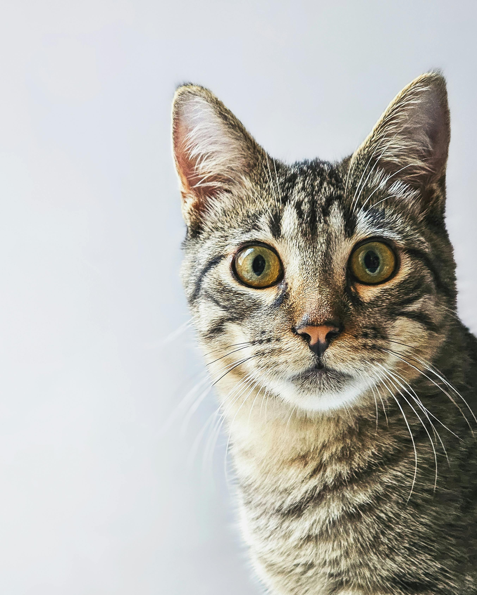

.jpg)

Mia
Gatinha carinhosa, castrada e vacinada. Ama colo, ronronar e brincar com bolinhas.
Cada gatinho resgatado é uma história de amor pronta para começar. Com a sua ajuda, garantimos cuidados, abrigo e um lar cheio de carinho.

Escolha seu novo companheiro e preencha o formulário de interesse. A adoção é responsável e acompanhada pelo projeto.
Gatinha carinhosa, castrada e vacinada. Ama colo, ronronar e brincar com bolinhas.
Duplinha inseparável, muito tranquila e perfeita para apartamento. Já castrados.

Resgatada das ruas, muito dócil e já acostumada com outros gatos. Procura um lar calmo para chamar de seu.
Sua contribuição ajuda com ração, medicamentos, castrações e cuidados diários dos gatinhos do projeto.
Além de adotar ou doar, você pode ser voluntário em feiras de adoção, transporte, lar temporário, comunicação e muito mais. Preencha seus dados e horários disponíveis que entraremos em contato.
Ao enviar o cadastro, seu nome aparece no dia da semana escolhido. Assim organizamos os turnos de forma leve para todo mundo. 🐾
Projeto criado com carinho por estudantes apaixonados por animais:
Para dúvidas, adoções ou parcerias, escreva para contato@anjosefadas.org ou envie uma mensagem pelas redes sociais.